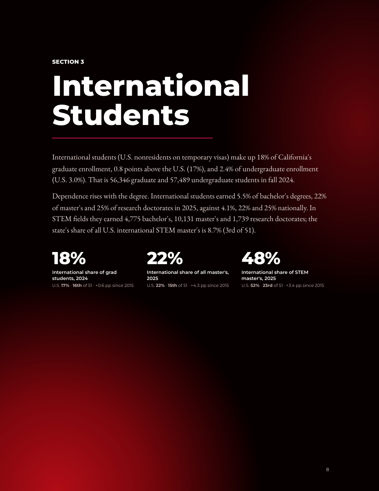
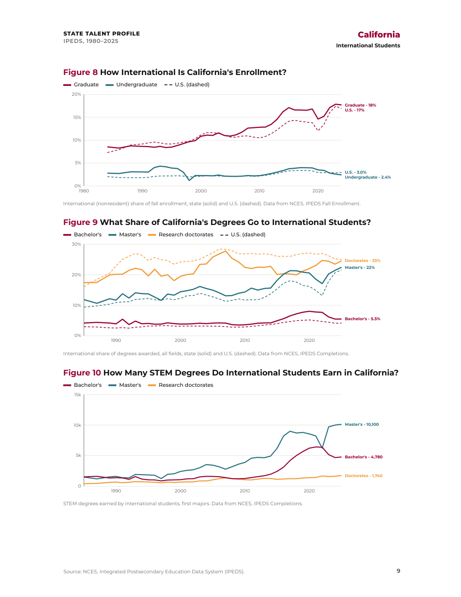
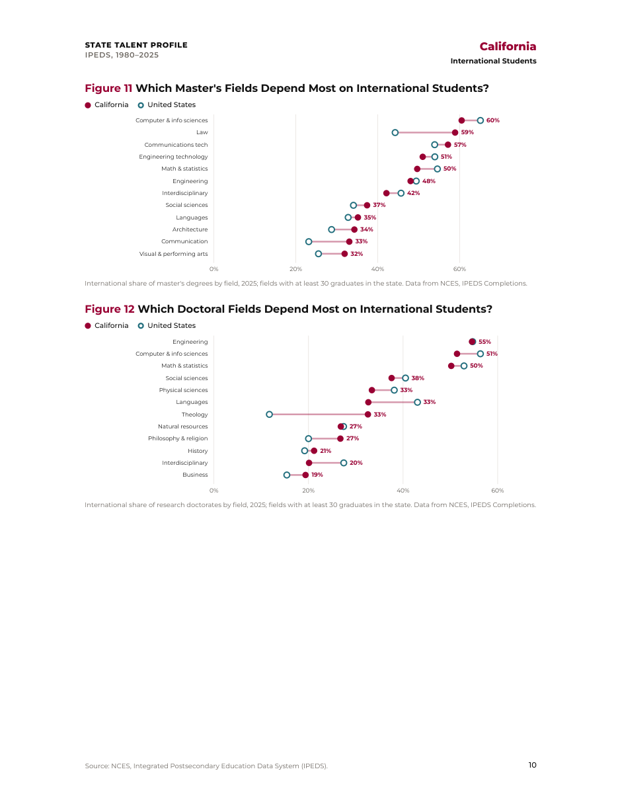
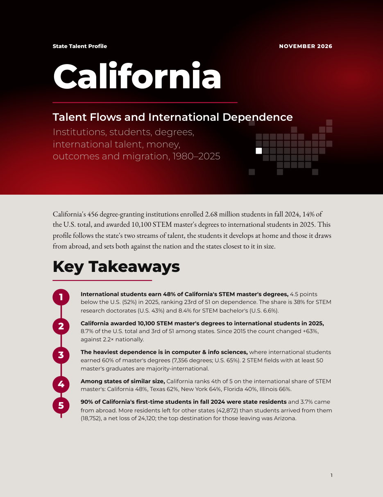
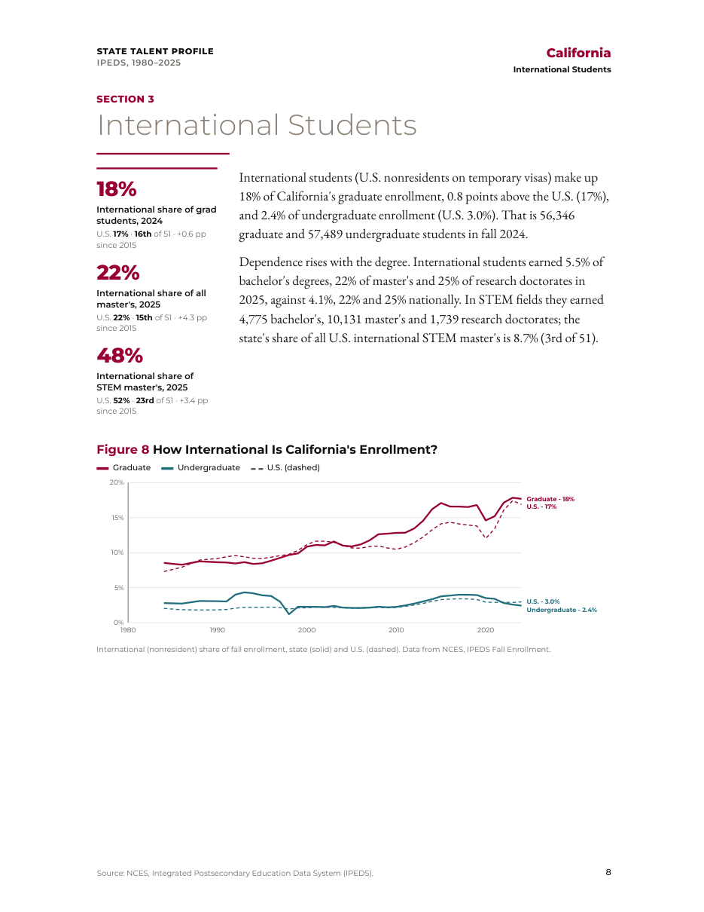
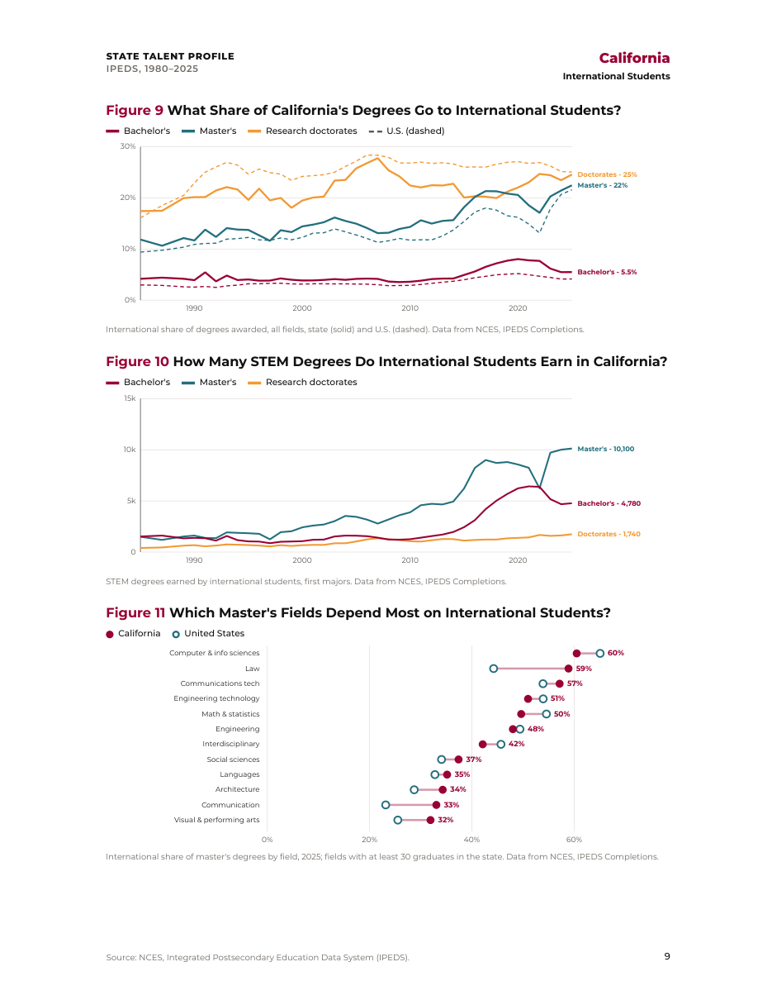
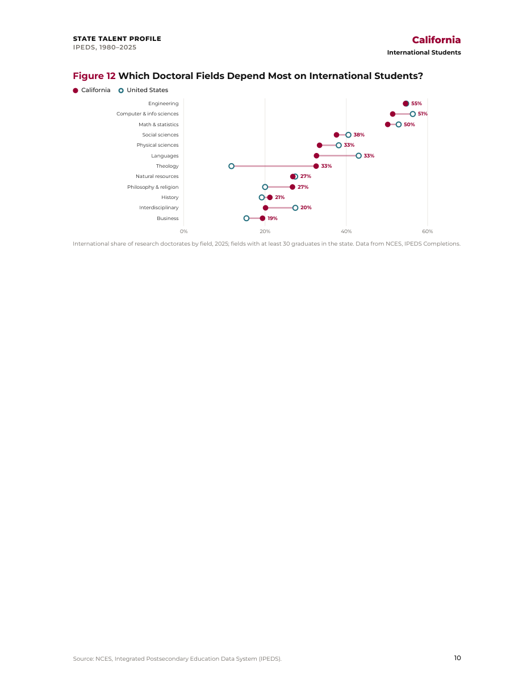

Same data and text for California in each: the cover, the opening of Section 3 (International Students) and the two pages after it. All three add a locator map to the cover, three headline numbers with U.S. comparison and rank at the start of every section, and larger chart labels. Click a page to see it full size.
A · Report chapters
Each section opens on a full dark crimson page, like the report's chapter pages: section number, big title, lead text and three headline numbers in white. Figures follow on white pages. Longest (34 pages for California) and most dramatic. Open the full PDF
Page 1

Page 8

Page 9

Page 10
B · Margin brief
A policy-brief layout. Headline numbers sit in a left margin rail beside the lead text; figures run the full width below. Calm and editorial; 29 pages. Open the full PDF

Page 1

Page 8

Page 9

Page 10
C · Scorecard
Headline numbers as boxed tiles with rank badges at the top of each section, sans-serif body, tighter type. Densest and most data-forward; 26 pages. Open the full PDF